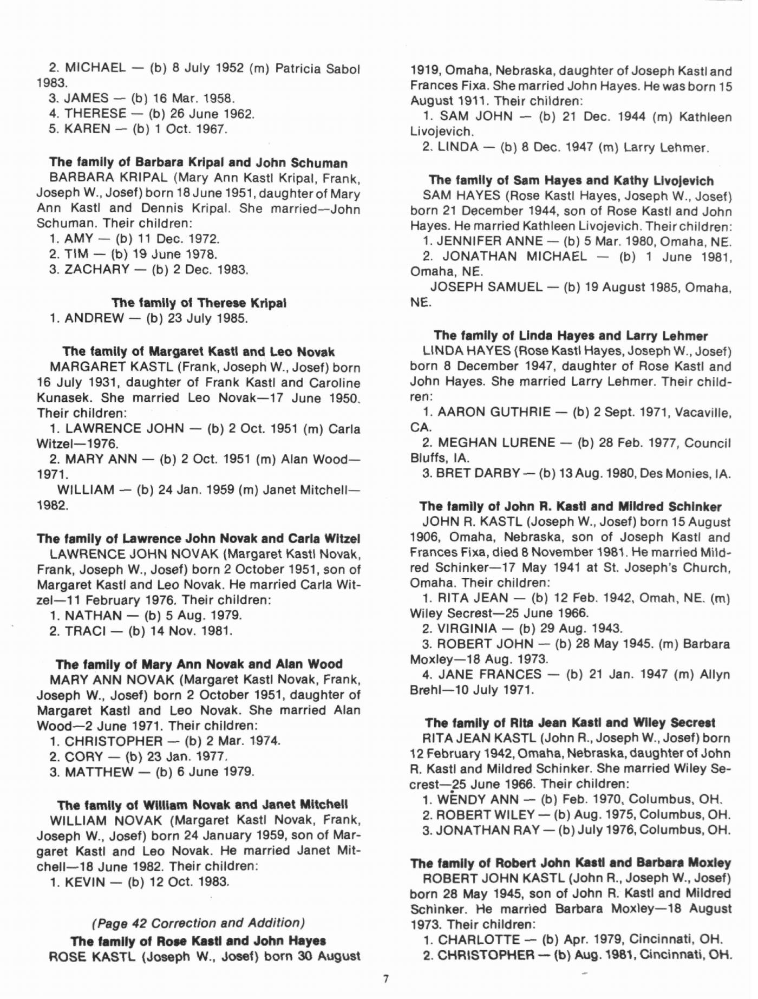

The book · Supplementary Section (1986)
Supplement page 7 The family of Barbara Kripal and John Schuman


Transcription
- MICHAEL — (b) 8 July 1952 (m) Patricia Sabol 1983.
- JAMES — (b) 16 Mar. 1958.
- THERESE — (b) 26 June 1962.
- KAREN — (b) 1 Oct. 1967.
The family of Barbara Kripal and John Schuman
BARBARA KRIPAL (Mary Ann Kastl Kripal, Frank, Joseph W., Josef) born 18 June 1951, daughter of Mary Ann Kastl and Dennis Kripal. She married—John Schuman. Their children:
- AMY — (b) 11 Dec. 1972.
- TIM — (b) 19 June 1978.
- ZACHARY — (b) 2 Dec. 1983.
The family of Therese Kripal
- ANDREW — (b) 23 July 1985.
The family of Margaret Kastl and Leo Novak
MARGARET KASTL (Frank, Joseph W., Josef) born 16 July 1931, daughter of Frank Kastl and Caroline Kunasek. She married Leo Novak—17 June 1950. Their children:
- LAWRENCE JOHN — (b) 2 Oct. 1951 (m) Carla Witzel—1976.
- MARY ANN — (b) 2 Oct. 1951 (m) Alan Wood—1971.
WILLIAM — (b) 24 Jan. 1959 (m) Janet Mitchell—1982.
The family of Lawrence John Novak and Carla Witzel
LAWRENCE JOHN NOVAK (Margaret Kastl Novak, Frank, Joseph W., Josef) born 2 October 1951, son of Margaret Kastl and Leo Novak. He married Carla Witzel—11 February 1976. Their children:
- NATHAN — (b) 5 Aug. 1979.
- TRACI — (b) 14 Nov. 1981.
The family of Mary Ann Novak and Alan Wood
MARY ANN NOVAK (Margaret Kastl Novak, Frank, Joseph W., Josef) born 2 October 1951, daughter of Margaret Kastl and Leo Novak. She married Alan Wood—2 June 1971. Their children:
- CHRISTOPHER — (b) 2 Mar. 1974.
- CORY — (b) 23 Jan. 1977.
- MATTHEW — (b) 6 June 1979.
The family of William Novak and Janet Mitchell
WILLIAM NOVAK (Margaret Kastl Novak, Frank, Joseph W., Josef) born 24 January 1959, son of Margaret Kastl and Leo Novak. He married Janet Mitchell—18 June 1982. Their children:
- KEVIN — (b) 12 Oct. 1983.
(Page 42 Correction and Addition)
The family of Rose Kastl and John Hayes
ROSE KASTL (Joseph W., Josef) born 30 August 1919, Omaha, Nebraska, daughter of Joseph Kastl and Frances Fixa. She married John Hayes. He was born 15 August 1911. Their children:
- SAM JOHN — (b) 21 Dec. 1944 (m) Kathleen Livojevich.
- LINDA — (b) 8 Dec. 1947 (m) Larry Lehmer.
The family of Sam Hayes and Kathy Livojevich
SAM HAYES (Rose Kastl Hayes, Joseph W., Josef) born 21 December 1944, son of Rose Kastl and John Hayes. He married Kathleen Livojevich. Their children:
- JENNIFER ANNE — (b) 5 Mar. 1980, Omaha, NE.
- JONATHAN MICHAEL — (b) 1 June 1981, Omaha, NE.
JOSEPH SAMUEL — (b) 19 August 1985, Omaha, NE.
The family of Linda Hayes and Larry Lehmer
LINDA HAYES (Rose Kastl Hayes, Joseph W., Josef) born 8 December 1947, daughter of Rose Kastl and John Hayes. She married Larry Lehmer. Their children:
- AARON GUTHRIE — (b) 2 Sept. 1971, Vacaville, CA.
- MEGHAN LURENE — (b) 28 Feb. 1977, Council Bluffs, IA.
- BRET DARBY — (b) 13 Aug. 1980, Des Monies, IA.
The family of John R. Kastl and Mildred Schinker
JOHN R. KASTL (Joseph W., Josef) born 15 August 1906, Omaha, Nebraska, son of Joseph Kastl and Frances Fixa, died 8 November 1981. He married Mildred Schinker—17 May 1941 at St. Joseph's Church, Omaha. Their children:
- RITA JEAN — (b) 12 Feb. 1942, Omah, NE. (m) Wiley Secrest—25 June 1966.
- VIRGINIA — (b) 29 Aug. 1943.
- ROBERT JOHN — (b) 28 May 1945. (m) Barbara Moxley—18 Aug. 1973.
- JANE FRANCES — (b) 21 Jan. 1947 (m) Allyn Brehl—10 July 1971.
The family of Rita Jean Kastl and Wiley Secrest
RITA JEAN KASTL (John R., Joseph W., Josef) born 12 February 1942, Omaha, Nebraska, daughter of John R. Kastl and Mildred Schinker. She married Wiley Secrest—25 June 1966. Their children:
- WENDY ANN — (b) Feb. 1970, Columbus, OH.
- ROBERT WILEY — (b) Aug. 1975, Columbus, OH.
- JONATHAN RAY — (b) July 1976, Columbus, OH.
The family of Robert John Kastl and Barbara Moxley
ROBERT JOHN KASTL (John R., Joseph W., Josef) born 28 May 1945, son of John R. Kastl and Mildred Schinker. He married Barbara Moxley—18 August 1973. Their children:
- CHARLOTTE — (b) Apr. 1979, Cincinnati, OH.
- CHRISTOPHER — (b) Aug. 1981, Cincinnati, OH.
People from the line of descent on this page
- John R. Kastl 1906–1981
- Rose Kastl b. 1919
Transcriber’s notes
Supplement page 7. Opens with children 2-5 of the Mary Ann Kastl / Dennis Kripal family (child 1 BARBARA is on the previous page). The Rose Kastl / John Hayes entry starts at the foot of the left column and continues at the top of the right column; reading order preserved. The next page begins with a new family heading. Two children are printed WITHOUT a number: 'WILLIAM' (third child of Margaret Kastl and Leo Novak) and 'JOSEPH SAMUEL' (third child of Sam Hayes and Kathleen Livojevich); they are transcribed as unnumbered lines after their lists. Printed as-is: 'She married—John Schuman'; heading 'Kathy Livojevich' vs text 'Kathleen Livojevich'; 'Des Monies, IA.'; 'Omah, NE.'; 'child-ren'; LAWRENCE JOHN and MARY ANN Novak both given (b) 2 Oct. 1951; stray dot above the E in 'WENDY' is a print speck.